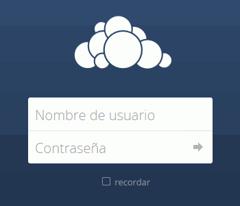

Estos ejercicios corresponden a una versión antigua de ownCloud. No están actualizados a versiones más actuales porque desde el curso 2016/17 no estoy trabajando en clase ownCloud, sino Nextcloud. He mantenido estos ejercicios en los apuntes por si le pueden servir a alguien.
En esta lección se proponen ejercicios para conocer y utilizar ownCloud. Se pueden consultar las soluciones de estos ejercicios de ownCloud, aunque se recomienda intentar realizarlos primero sin recurrir a estas soluciones. A continuación se pueden realizar los ejercicios (2) de ownCloud, en los que se amplian las funcionalidades de ownCloud.
ownCloud (1) 1 - Descargar
En este ejercicio se trata de descargar y descomprimir ownCloud en el servidor local.
Visite la página web del proyecto ownCloud.
Descargue la máquina virtual de Bitnami que incluye la versión ownCloud 8.2.1, publicada el 17 de noviembre de 2015. Se recomienda esa versión ya que estos ejercicios se han preparado para ella.
Si la máquina virtual de la versión ownCloud 8.2.1 ya no está disponible en la web del programa, puede descargarla desde la página de Descarga de aplicaciones.
Descomprima la máquina virtual en una carpeta (no tiene por qué ser la carpeta Aplicaciones)
ownCloud (1) 2 - Instalar
En este ejercicio se trata de instalar ownCloud.
Abra en VirtualBox o VMware la máquina virtual de ownCloud.
Ponga en marcha la máquina virtual. En ella se indica la dirección IP asignada y los datos del usuario administrador tanto del sistema operativo como de la aplicación.
No es necesario entrar en la máquina virtual.
Abra http:/192.168.XXX.YYY en el navegador y compruebe que se abre la página inicial de ownCloud:

Entre en ownCloud como administrador y compruebe que puede ver el escritorio de ownCloud:
Salga de ownCloud y compruebe que puede volver a entrar como administrador.
ownCloud (1) 3 - Configuración básica
En este ejercicio se trata de realizar la configuración básica de ownCloud:
Cambio de idioma
Cambie el idioma del interfaz del usuario administrador al español.
Entre en ownCloud como administrador mediante una conexión no cifrada http://192.168.XXX.YYY/... En el panel de administración, compruebe que se muestra el aviso siguiente:
Configure el servidor Apache para forzar el acceso mediante https.
Para ello, es necesario entrar en la máquina virtual. En la lección Bitnami Varios se comenta cómo realizar operaciones básicas en las máquinas virtuales de Bitnami.
Se puede hacer de dos formas distintas, modificando el archivo de configuración de Apache httpd.conf y reiniciando el servidor:
Antes de modificar un archivo de configuración se recomienda siempre hacer una copia del archivo original.
Añada la directiva SSLRequireSSL en la directiva del directorio raíz. De esta forma sólo se atenderán las peticiones https.
<Directory />
AllowOverride none
Require all denied
SSLRequireSSL
</Directory>
Añada una directiva VirtualHost que redirija las peticiones http a https.
Si se muestre un aviso de seguridad por no disponer el servidor de un certificado de seguridad válido, será necesario indicar al navegador que se confíe en la identificación del sitio.
Una vez habilitada la opción de forzar https, salga de ownCloud y compruebe que, dependiendo de cómo se ha modificado httpd.conf, si se accede de nuevo mediante la dirección http://192.168.XXX.YYY/...
... o bien se muestra la página de Acceso prohibido (que corresponde a un código de estado HTTP 403)
... o bien se redirecciona automáticamente a https://192.168.XXX.YYY/...
ownCloud (1) 5 - Habilitar HTTP Strict Transport Security
Instale Filezilla o WinSCP y conéctese a la máquina virtual:
Compruebe que también puede conectarse con el navegador:
Acceso por SFTP
Esta parte del ejercicio está por redactar. No creo que me dé tiempo a prepararlo este curso. Se trataría de conectarse a la máquina virtual con WinSCP o Filezilla por SFTP (o FTPS).